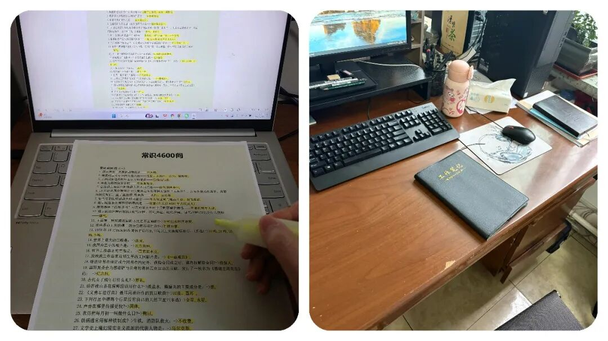
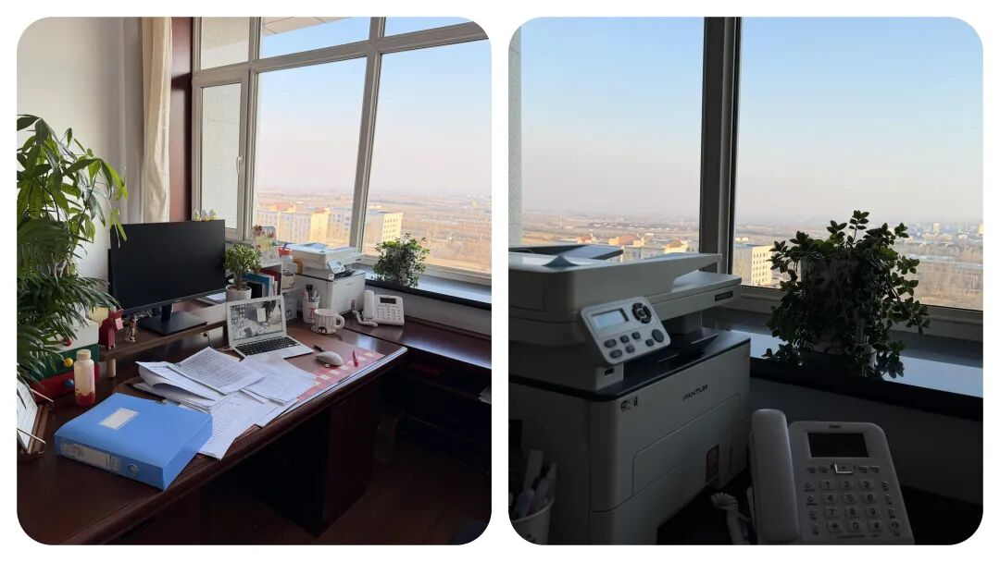
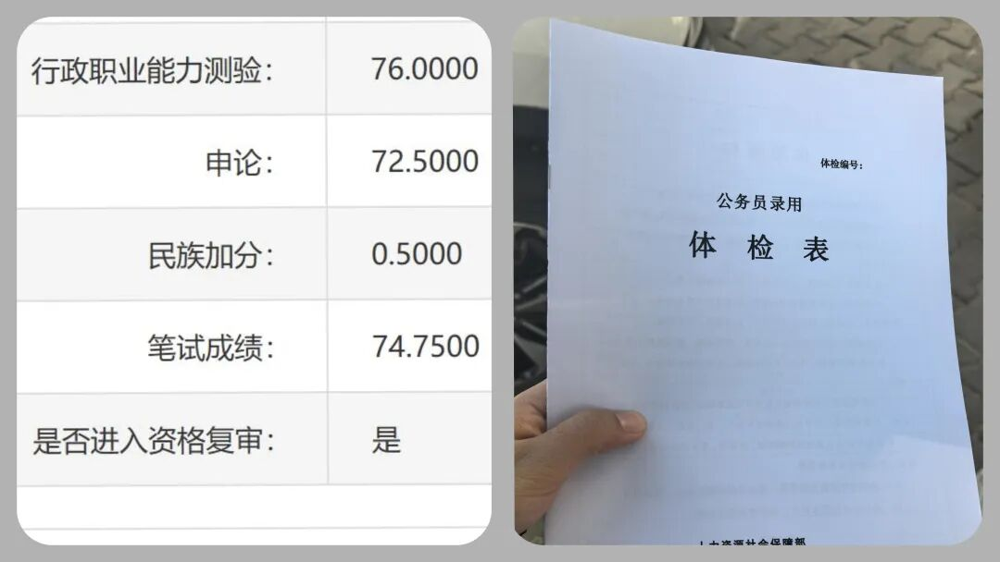

一次性说透！公务员与事业编，到底有什么区别？




公益一类多是全额拨款，像义务教育公立学校、乡镇卫生院、科研机构，全靠财政供养，日子相对清闲、压力小。 公益二类更灵活点，比如不少公立高校，还有很多大医院，他们赚钱能力强一些，财政只补部分，其余得靠自身运营来撑。所以很多高校、医院倒是越做越像企业。


“这款纸巾是我用了很久的也挺心头好，原生木浆用着安心，加大尺寸够厚实，不飞絮不掉屑，不管是工位备着还是家里囤货都合适，省心又实用👇”